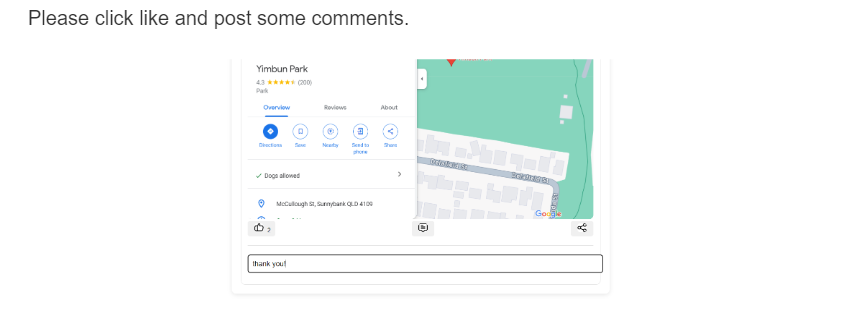
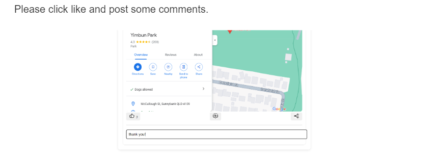

PORTFOLIO - 2023
ABOUT ME

CONTACT ME
Feel free to contact me if you have any questions or requests
EMAIL: jasonwu940@outlook.com
Project Brief
Poach Park Locator
Poach Park Locator is an innovative web-based application crafted specifically for dog enthusiasts and owners aiming enhancing their outdoor experiences. By merely inputting a locality name or postal code, users gain the ability to not only pinpoint neighboring dog-friendly parks but also delve into intricate park details, firsthand forum of user reviews, and ratings. Moreover, the application stands out by offering tailored recommendations based on park renown. Vital information feeding this platform originates from reliable sources such as the government's Open Data API, Google APIs, and genuine user forum contributions, guaranteeing both accuracy and real-time updates.
Part A
In this project, my main responsibility is web development. I have previous experience with web development courses. After discussions with me from other team members, I became the team leader and took the lead in the main direction of web development. During the initial design phase, my main responsibility was to organize everyone's tasks and conduct search and research to identify target user groups and data sources.

Idea Development
The original idea for a team project was a dog park finder project on my personal poster part.
My main idea as a personal poster was to help dog owners in Brisbane, especially those unfamiliar with the near parks.
Initial Concept: Users can inquire about the nearby dog park and check the facilities.
Inspiration: Inspired by parkbuddies, enter the area name to view dog parks.
Brainstorming Approach: Team members actively pitched concepts and ideas.
We used brainstorming cards to try and find a unique but at the same time practical angle.
- A forum for communication between dog owners.
- Find more data sources such as pet-friendly areas, pet-friendly shopping malls.
- Recommend the most popular and hot parks.
After many discussions and evaluations, we settled on our idea and the functionality we wanted to implement:
developing a dog park finder with additional tools tailored to the convenience of the user group.
- Innovative: Compared to other products currently on the market, it provides a smart way to help dog owners enhance their outdoor experience.
- Practicality: Help these dog owners find the right dog park to enhance their socialization and outdoor experience.
- Technical Feasibility: We believe this project is feasible given the skills and resources of our team.
Project Proposal
After we had all our ideas and content crystallized, I began the main storyboarding process, which focused on describing our user base. According to the design theory mentioned in the International Journal of Design (2007), the concise design of the storyboard helps to depict and convey detailed information more clearly, especially in relation to user interaction and experience. This storyboard was created in conjunction with a promotional strategy. Our goal is not just to show what users can do after visiting our website. It is more important to explain how users can use our features effectively. This is a key element mentioned in Human-Computer Interaction (1985) - clearly showing how the product meets user needs and guiding the user through the process. We use storyboards to write possible user stories, which are based on user personas built by team members and are designed to demonstrate and promote the functionality and usage scenarios of the product. Our storyboards are more than promotional materials; they are tools based on research and user empirical data to deepen user understanding, improve product design, and enhance user experience. We ensure that promotional materials are not only visually appealing but also accurately convey the value of our website in order to better describe our target user base.
Reflection on Part A
When reflecting on the successes of Part A, we must also acknowledge that there are areas for improvement. Although we established a solid foundation for the project and developed a detailed design and development plan, feedback from our mentor prompted us to dig deeper and analyze the data to enrich our research base. As the Project Management Journal (1998) suggests, project success lies not only in the clarity of the plan but also in the depth and breadth of the data analysis behind it. In the next phase, we will focus on enhancing the accuracy of decision-making and better understanding user needs and market dynamics through in-depth data mining.
For critical reflection on teamwork, we recognized that although task decomposition improves work efficiency, the process of team communication and decision-making still needs to be optimized. Referring to the interdisciplinary teamwork model mentioned in the International Design Journal (2007), we need to establish a more efficient and open communication mechanism within the team. This will not only promote information sharing and idea collision among team members, but also help improve the team's collective understanding of problems and problem-solving capabilities.
Finally, when formulating reporting and presentation strategies, we should also adopt a more active strategy, as proposed in the International Journal of Technology and Design Education (1990), to optimize our expression and content through continuous interaction and feedback mechanisms. We will work to create a more inclusive environment where team members are encouraged to come up with creative ideas and provide real-time feedback at all stages of a project. This way we ensure that every aspect of the project is fully thought through and evaluated, resulting in a high-quality outcome.
Part B
My main responsibility in MVP is web code development. We completed the implementation of basic functions and basic interactions during the MVP stage and achieved certain success.
MVP search(index) website
Click on image to enlarge
MVP description


- Visual layout of the project: The UI design was basically realized, but some effects and layout were not realized.
- Page responsiveness: Compatibility with computers and mobile phones has been considered, but some features such as filtering and facilities pages failed to consider page compatibility.
- API calls and main interactive features: Main functions such as API calls, search, filtering, and Google map display have been made. In addition, peripheral searches, forums, popular recommendations, etc. were not made due to time constraints.
MVP development process
I take the lead in bringing our visual layout concepts to real. Although we faced challenges in implementing certain effects and layout elements, I ensured effective execution of the main UI. Responsive Design: Understanding the different devices my audience may be using, I focused on ensuring computer and mobile compatibility. While some specific features, such as filtering and facilities pages, have limitations in terms of responsiveness, I go to great lengths to ensure that much of our website provides a seamless experience across devices. API Integration: I took the lead on integrating the API calls for our platform, ensuring that locators could obtain and display real-time information about the dog park. Search and filtering: I developed the search functionality to allow users to easily find parks based on their preferences. Although filtering is integrated, we faced challenges in scaling it due to time constraints. Google Maps Display: Recognizing the importance of visual aids, I integrated Google Maps Display into our platform. This ensures that users can visually find parks and understand their exact location. Time Management: Considering our timeline, I have to make strategic decisions regarding feature implementation. While I successfully implemented the core functionality, some aspects such as peripheral searches, forums, and top recommendations had to remain. These are the challenges I have identified for future iterations of our project. Through the development process, I learned the importance of MVP prioritizing features and look forward to enhancing our platform based on user feedback and needs.
Response to Feedback on MVP Project
Firstly, I'd like to thank everyone and staff for the comprehensive feedback we received on our project. Addressing the specific points raised:
Objectives in Relation to Interaction Plan:
I learned the importance of aligning our goals with the interaction plan. As emphasized by the authoritative publication on human-computer interaction (Human-computer interaction, 1985), the close relationship between clear goals and user experience is the key to successful design. So, going forward, we will ensure that these elements are tightly integrated so that our goals are clear in the user interactions we are pursuing.
Success Criteria and Measurement:
In the new version of our success criteria for the "Dog Park Locator" platform, we've adopted the SMART principle to clearly define and measure our platform's success. Our focus has been to provide a clear vision, detailed KPIs, actionable strategies, user-centric relevance, and a timely roadmap. Our success criteria, supported by academic research, have become more structured, feasible, and clear. Key performance indicators (KPIs) to measure results and effects. Only with clear and measurable performance indicators can we better evaluate the status and progress of the project(Kaplan & Norton, 1996).
Comprehensive Interaction Plan:
- Design Factors: We'll ensure to focus on Structure, Mapping, Orientation, Visibility, Feedback, Error prevention, Language, and Consistency. This comprehensive approach will make our product more intuitive and user-centric.
- Technical Details: As the lead developer, I'll document the specific tools and technologies we're using. This includes listing out the API datasets, and naming specific HTML/CSS/JS/PHP snippets.
- Learning and Skill Acquisition: We understand the value of continuous learning. To address specific design or development needs, our team is ready to undergo training and practice.
- Task Allocation: This is crucial for efficient development. I'll ensure to keep a clear allocation of who's responsible for every piece of code and styling. This clarity will help in timely delivery and efficient debugging.
Reflection on Part B
In the feedback after completing the MVP stage, I became acutely aware of the shortcomings of Part B in terms of goal clarity and relevance to the engagement plan. Feedback pointed to a lack of clear connections between our team’s project goals and actual user engagement strategies, which resulted in vague and unspecific success criteria. Such feedback becomes the starting point for our team to self-examine and improve.
We were advised to refine the relationship to the user engagement strategy in the project goals and to refine the success criteria through in-depth analysis of academic research and user testing. This top-down thinking leads to a deeper understanding of how project success is measured. For example, we might use data analysis or user interviews to determine whether success criteria are being met.
The feedback part of interaction design is particularly critical. We are reminded to consider more carefully factors in product design such as structure, mapping, directionality, visibility, feedback, error prevention, and language consistency, and to reflect on how to implement these principles. For example, we will clearly list and explain the selection of API datasets, the use of HTML/CSS/JS/PHP code snippets, and the techniques you need to learn to achieve these design goals.
After deep reflection and detailed analysis, we recognized multiple potential points of improvement in project planning and execution. In order to more accurately meet the needs and expectations of users, we have started a comprehensive action plan revision for MVP. We will reframe the project goals to ensure they are tightly aligned with the user engagement strategy, and use user research to define clear and measurable success criteria. According to the International Journal of Technology and Design Education (1990), successful product design requires not only clear structure and mapping, but also a deep understanding of users' learning processes and skill acquisition. Our team will take steps to evaluate our design decisions against these standards and ensure our products are optimized through ongoing user testing. In addition, we will establish a comprehensive evaluation mechanism that includes user interviews and website analysis to ensure that we can effectively track and achieve these standards.
I will work to develop an understanding of interaction design principles, including structure, mapping, directionality, visibility, feedback, error prevention, and language consistency, and integrate these principles into product design. Through this series of closely connected initiatives, I am confident that I will lead the team to continue to optimize our MVP and create a comprehensive, user-friendly product that truly meets the needs of the target user group.
Part C
Overview and Contribution
- Completed web application.
- Trade show presentation and speech.
- Complete development of all web page functions.
- Improved styling and user interface.
- Produce promotional materials and design reports.
Main Function Changes
Before
After
After getting feedback from Part B, our group brainstormed some new ideas through discussion and brainstorming. We decided to adjust the interactivity and UI of the feature. Based on feedback, we have made the search function capable of inputting the region name and postcode. The results of our search can be displayed on the map. Users can click on the map to view dog park location information and detailed park facility pages.
Before
After
The second major change we made was the decision to turn park features into detail pages. We use the objectId of the API as a parameter to display the park information separately. This can perfectly display the detailed information and content of the park and help users obtain information more easily.
New Function
New features in the final product include:
- Park Interest Counter & Popular Park Recommendation: Shows user interest in parks and recommends popular parks.
- Cartoon Icons in Map Mode: Dog and bone icons represent user and park locations.
- Forum Feature: A space for users to discuss dog-related topics.
- Search Nearby Restaurants: Get location to nearby eateries from the park's page.
Code challenges
Google API Address Supplementary Search

This code segment enables users to input suburban names or area numbers, which are then processed by Google's API. A major challenge faced was the discrepancy between regional names provided by Google and the suburb names in the government API. The goal was to align Google's outputs with the government API's data, allowing users to accurately fetch and link information.
Challenges:
- Mismatches in suburb naming conventions between Google's API and the government's API.
- Google returning names in lowercase or different languages based on browser settings.
Solutions:
- Utilized PHP's "strtoupper" function to convert suburb names to uppercase.
- Specified English ('language': 'en') as the default query language for consistent results.
- I hope future improvements include direct querying by entering the user's address and adding more error reminder mechanisms.
Interest count of the Park page cannot be refreshed on time.

This code segment allows users to express their interest in a park by clicking the "interest" button. The major challenge faced was the inability to refresh the interest count on the Park page in real time. After clicking, the server updates the interest count, but the count only gets displayed on the page after refreshing.
Challenges:
- Interest count not updating on the Park page in real time after a user clicks the "interest" button.
- Previous coding only sent a POST request to the server but did not update the page immediately.
Solutions:
- Modified the development strategy to extract the ID and name of the park from the nearest park card when the button is clicked.
- Added data validation and error handling for more robust and secure functionality.
- Future plans include using real-time communication technology for establishing a persistent connection between the front-end and the server. This will allow instant updates when the data on the server side changes.
Tradeshow
Before the exhibition, one of the classmates in our group dropped the course two hours before the tradeshow, which caused some minor confusion among us. But we have worked hard to overcome it and continue to prepare our content. During the show, users had a very positive experience when trying our products. Many users are attracted by the friendly design and powerful functionality of our pages.
Although our primary user base is pet owners, many of our course peers expressed shock at the display of our powerful information resources at the show. Some users have expressed curiosity about our Google search and want to know what technology or API is used behind it. They were surprised by the accurate complement of searches in our project and the quick presentation of results.
Final Website
 

Some screenshots of the final website demo can be seen, or you can visit the site:
https://deco1800teams-stu01t11cyberseekers.uqcloud.net/
Reflection on Part C
We feel very successful with the outcome of Part C. We completed most of the planned functionality and are happy with the final visual aesthetic. There are still some functions that have not been completed due to development time and cycle. We hope to improve them in future studies. Trade Show Experience: Due to one of our group members temporarily withdrawing from the course two hours before the trade show. We encountered some challenges in our presentations at trade shows. But we try our best to complete this challenge. Other peers who listened to our reports and presentations expressed high interest in our products.
During the development process, I deeply realized the strong correlation between technology realization and user experience. Using Google API to assist users in address search really brings great convenience to the project. However, the data mismatch with the government API made me realize that when integrating APIs, we should not only consider technical issues, but also pay attention to the differences between data. Especially when it comes to the query of users' key information, any data deviation may lead to the decline of users' clarity or understanding ability. Secondly, although the function of the "interest" button can be said to be realized at the technical level, the user experience is obviously affected. Interest count will not be updated in real time, which may give users the illusion that the system does not record their behavior. This tells me that sometimes there is a gap between technical realization and user feedback, and this gap will affect the acceptance of the overall product. Those two challenges made me realize that development needs more than pure technical realization. Development requires more than purely technical implementation. We also need to think more from the user's perspective to ensure their experience is smooth and enjoyable (Fleury & Chaniaud, 2023). We also need to think more from the user's point of view to ensure that their experience is smooth and enjoyable.
Portfolio
Research and Ideation
- This is my first portfolio website, so I first researched the topic and thought about the points I should focus on and cover.
- Then I started sketching out some ideas for page layout and some navigation options.
- This relatively simple website seemed like the perfect place to showcase my portfolio.
Layout
- Layout is probably one of the most important parts of a portfolio website. I created the HTML and added some real content, and I was constantly testing what I was designing.
- Then I started adding CSS that would allow the site to fall into an easy-to-read and focused layout.
.png)
.png)
.png)
.png)
.png)
.png)
.png)
.png)
.png)
Reflection
Overall, I believe this portfolio turned out well. I am very happy with the final form of the website and the process has been a rich learning experience. My portfolio content is clearly presented and the website effectively captures and communicates the simplicity of my designs. The only thing I haven't considered is designing it to be mobile friendly, I need to consider improving accessibility in future development. I learned a lot from the deco7180 group project and creating this portfolio gave me the opportunity to reflect on this and think about my shortcomings.
Course Reflection
Description: This semester, I studied the DECO7180 course. As part of the course project, I led a web-based project to create a service for dog owners in Brisbane to find dog parks. My responsibilities included coding the entire website, integrating the API, and ensuring the final product adhered to our original concept. This experience is a hands-on experience, with the entire project designed, prototyped, coded, and developed in class studios and small groups. I primarily do coding and interact with the team for ideation, feedback, and project planning. We built a fully functional website that caters to the needs of Brisbane dog owners, including features such as park interest levels and community engagement forums. My goal is to develop a robust and user-friendly website that meets the specific needs and expectations of my target audience.
Feelings: Throughout the entire project, I had a lot of emotional ups and downs. At the beginning of the project, I was excited about being able to turn an idea into a reality; during the MVP stage, I felt anxious and stressed due to poor feedback. I was disappointed, and I hope to meet and reach the final requirements through continuous improvement. Our team members worked hard together to modify and improve the project. In the end, it was very satisfying to see the positive response from users to our finished product.
Evaluation: This project allowed me to learn a lot about coding and UX design. I learned more about front-end and back-end development and usage. However, the lack of more coding practices helped create a challenging workload. The development and integration of core functionality in our project are progressing smoothly and has received positive feedback from users. In the team, I mainly do coding tasks, which is a relatively heavy workload for me. It is difficult for teams to balance feature complexity. Initial responsiveness and integration of some features also presented challenges. My coding skills are actively contributed, and the team has many people involved in the technical process at the same time to distribute the workload more evenly.
Analysis: As my team and I work, an iterative approach based on feedback and test results helps shape a product that resonates well with end users. Our team's collaboration and decision-making process showed maturity from ideation to implementation. Technical challenges such as API integration, database optimization, and responsive design of the front-end are solved through teamwork. For every problem in the project, we found a solution through research and cooperation. The technology and collaboration experience learned in this process are extremely valuable. This experience highlights the importance of teamwork in development projects and the need for appropriate resource allocation.
Conclusion: This project taught me that a good team leader should not only lead the way but also provide stability and confidence when the team encounters challenges. I learned technical skills and how to manage a team and deal with stress and uncertainty. Positive feedback from users also confirms the value of our efforts. I need to develop more vital project management and delegation skills, as well as advanced coding skills, to handle complex situations more effectively.
Action Plan: In the future, I plan to integrate user feedback into product development earlier so that we can adjust and optimize our products faster. I would stick with a more collaborative approach, get help for complex coding tasks, and use project management tools to better track progress and distribute work. I will also continue to improve my technical skills, particularly in front-end development and user experience design, to be able to create more intuitive and engaging products. At the same time, I will strengthen my leadership and team management skills to ensure that the team's morale and productivity can be maintained even when the team faces difficulties. I will also advocate for regular team check-ins on future projects to ensure workload balance and collective problem-solving.
References
- Eberhard Grossgasteiger (2013). Snowy Mountain, https://www.pexels.com/photo/snowy-mountain-1287145/
- Emojipedia. (n.d.). Arrow Emoji. Retrieved November 4, 2023, from https://emojipedia.org/right-arrow/
- Fleury, S., & Chaniaud, N. (2023). Multi-user centered design: acceptance, user experience, user research and user testing. Theoretical Issues in Ergonomics Science. https://doi.org/10.1080/1463922X.2023.2166623
- Human-Computer Interaction. (1985). L. Erlbaum Associates.
- International Journal of Design. (2007). Graduate Institute of Design, National Taiwan University of Science and Technology.
- International Journal of Technology and Design Education. (1990). Kluwer Academic Publishers.
- Kaplan, R., & Norton, D. (1996). Using the balanced scorecard as a strategic management system. Harvard Business Review, 74(1), 75–85.
- Project Management Journal. (1998). Project Management Institute.
- W3Schools. (n.d.). How To Create a Lightbox. Retrieved November 4, 2023, from https://www.w3schools.com/howto/tryit.asp?filename=tryhow_css_js_lightbox